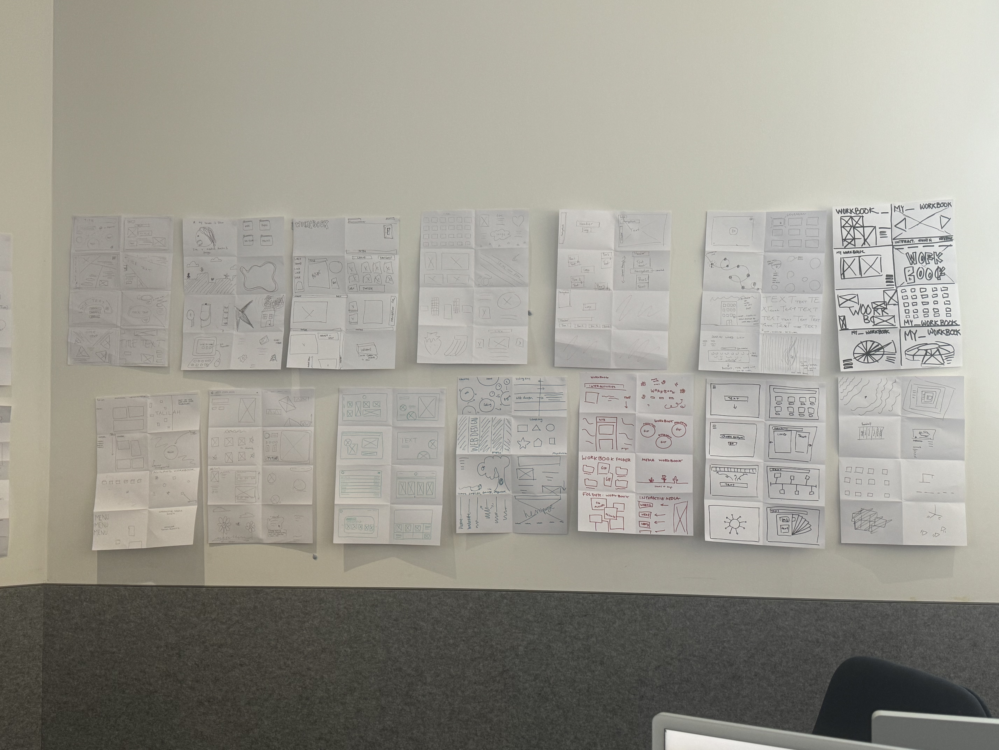
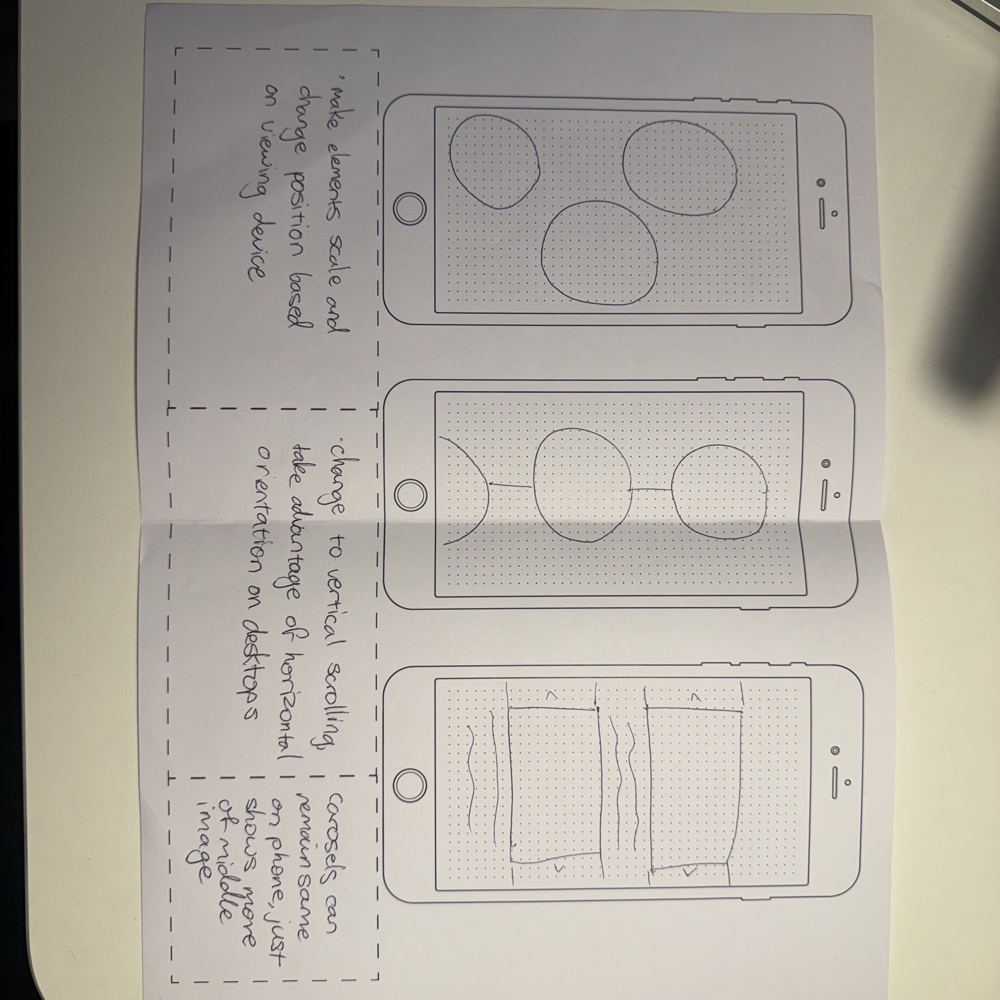

HTML tags exercise - used as a refresher for
the structure of tags and elements such as divs or sections.
Can be used as a good exercise when studying other websites,
deciding how elements could be classified.
Week 1

Crazy 8s - an exercise that can be really tiring
but I found it really beneficial to get some especially unique ideas.
Most importantly to get out a few bad ideas, for every decent idea.
It makes each option easier to commit to because it doesn't matter
if you don't like it. It's also helpful to compare different ideas.
One idea may be really unique, but you may prefer a different idea in
contrast. The idea of connected bubbles came from this exercise.
Week 2

Designing for phones - the most difficult thing
I find in coding websites is making pages responsive to different
devices and viewing ratios. This exercise is a good reminder to also
code sites to be easily viewable from different devices. Although I'm
not too sure how to recognise how the site is being viewed, it was
good to pre-plan how I'd want my elements set out for when I do code
for this.
Week 3
its not even week 4 yet idk